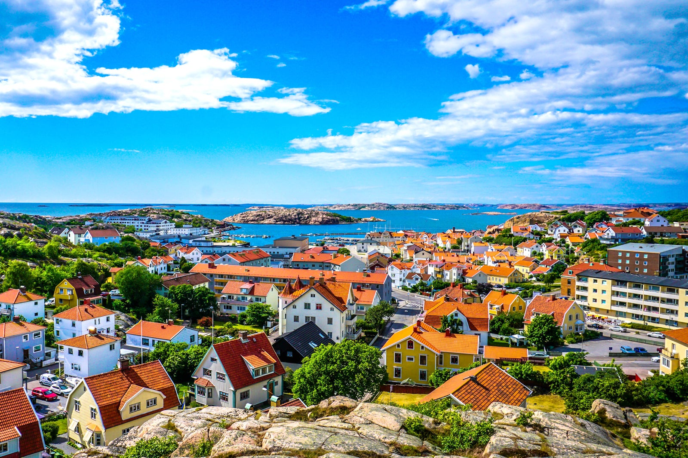
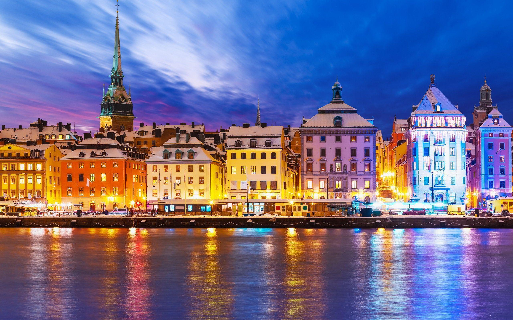

Stockholm, the vibrant capital of Sweden, is a stunning city spread across 14 islands connected by over 50 bridges.Visitors can enjoy the city's scenic waterfronts, picturesque cobblestone streets, and world-class museums, making it a must-see destination for travelers.
Winter in Stockholm brings snowy landscapes, short daylight hours, and festive charm. The city glows with cozy cafés and ice rinks, while freezing temperatures call for warm layers.
This Swedish coastal town features charming red and yellow-roofed houses surrounded by lush greenery and rocky terrain. The clear blue waters and scattered islands create a peaceful, scenic atmosphere perfect for a relaxing getaway.
The night in Stockholm is a magical blend of serene waters reflecting the city's illuminated architecture, vibrant streets filled with life, and the soft glow of streetlights casting a warm hue over the cobblestone alleys and scenic harbors.
The Northern Lights in Sweden paint the Arctic sky with mesmerizing ribbons of green, purple, and pink, dancing gracefully across the dark, starry heavens, creating a surreal and ethereal spectacle that captivates all who witness it in the remote, snowy landscapes.